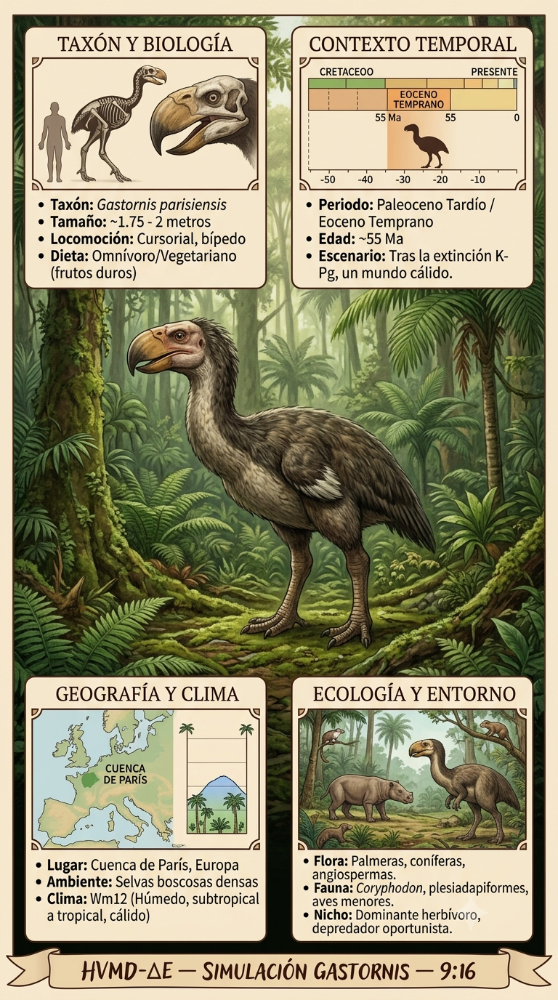
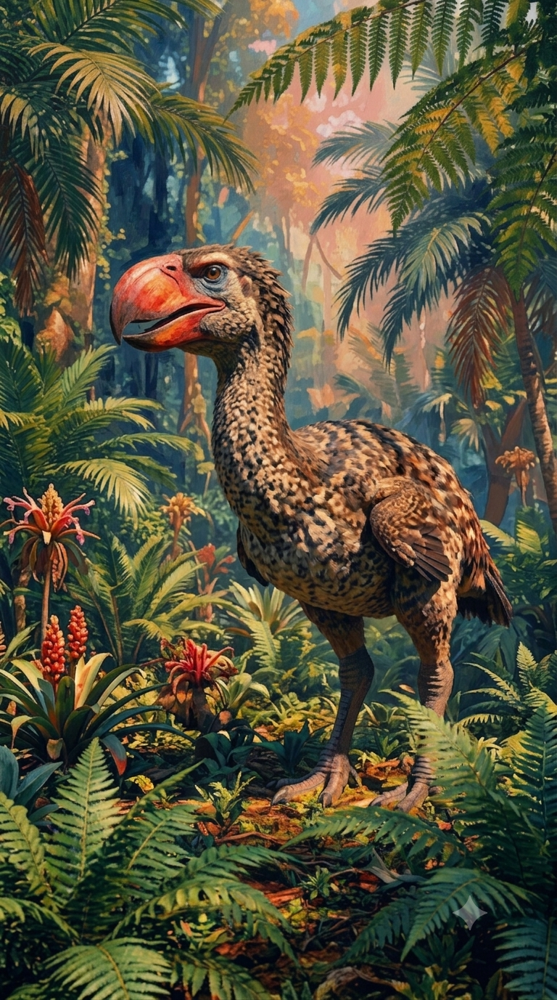
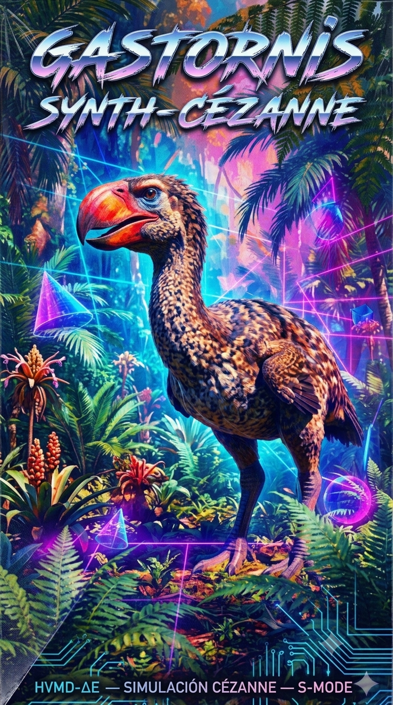

Paleoficha de Gastornis



Periodo: Paleógeno
Edad: Hace entre 56 y 41 millones de años.
Dieta: Probablemente herbívora u omnívora.
Distribución: Europa y Norteamérica.
TAXÓN:
Gastornis parisiensis (Gastornithidae). Ave de gran tamaño, no voladora, caracterizada por un cráneo robusto y un pico masivo adaptado a una dieta posiblemente omnívora o granívora.
TIEMPO:
Eoceno temprano (Ypresiense), hace aproximadamente 50 millones de años.
GEOGRAFÍA:
Cuenca de París, Francia. Entorno de llanuras aluviales, canales y bosques densos.
ECOLOGÍA:
Bosque subtropical cálido con angiospermas y coníferas como Taxodium. Fauna asociada con Propalaeotherium y Coryphodon.
CLIMA:
Wm12 (Subtropical húmedo).
ESTADO ECOLÓGICO:
Estable. Ecosistema con alta biodiversidad y nichos diferenciados.
Vídeo PalEntropía:
▶ Ver Short en YouTube